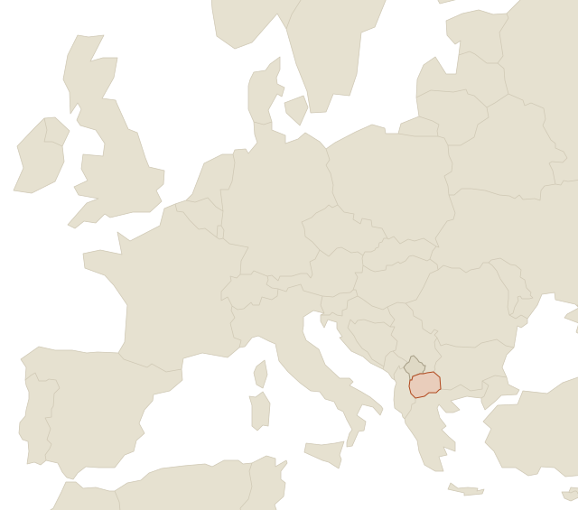

EU-aligned regulation, a deep pool of finance and accounting talent, CET time zone, and operating costs 40–60% below Western Europe. We advise companies evaluating North Macedonia as an outsourcing, nearshoring or project destination — grounded in our own operational presence in Tetovo and a broad professional network across the country, especially in finance.
CET time zone — 2h flight from most European capitals.

Central European Time, two to three flight hours from most EU capitals. Your morning call is their morning call — no overnight handoffs, no 6 a.m. escalations.
Total employment costs for qualified finance professionals typically run 40–60% below Western European levels — at comparable quality for structured finance work.
EU candidate country: accounting standards follow IFRS, data protection law mirrors GDPR, and the legal framework is converging with the acquis. Familiar rules, lower cost base.
Strong university pipeline in economics and accounting, high English proficiency, and a workforce experienced with international groups — several global firms already run delivery centers here.
Plenty of advisors can hand you a country comparison matrix. What they can't give you is what actually determines success: knowing which universities produce the strongest accounting graduates, what realistic salary bands look like this year, which local advisors are worth their fee, and how things actually get done in practice.
We run our own shared services center in Tetovo, backed by a broad professional network across Tetovo and Skopje — especially in finance. So our advice on the destination is grounded in our own operational experience, not desk research. And where the local conversation happens in Macedonian, our network covers it.
Your finance operations delivered from Finateo's shared services center under a service agreement. Fastest start, no local entity, exit flexibility preserved.
We build and run your team within our structure, then transfer it into your own entity once it's up and running smoothly. De-risked path to an owned operation.
We handle entity setup, governance, recruitment support and local compliance — and hand you the keys to a functioning operation.
A destination assessment takes weeks, not months — and gives you a defensible answer either way.